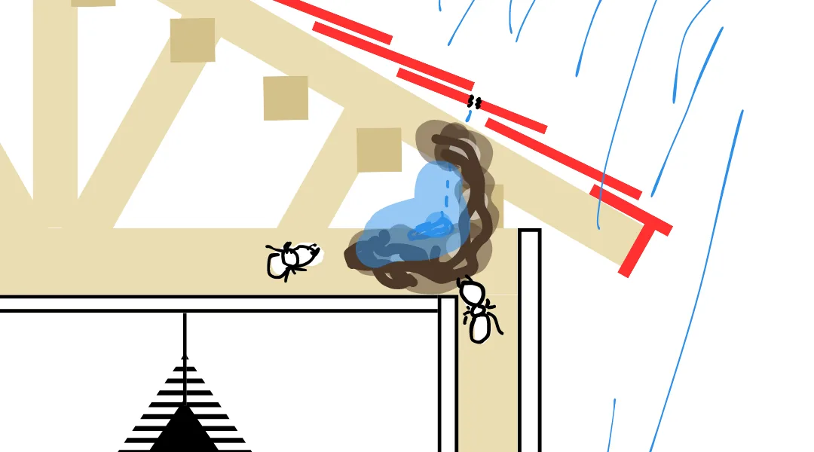

目次
- なぜ雨漏りするのか
- 雨漏りを放置すると…
- 見えない雨漏りとは
- 定期点検の重要性
- まとめ
なぜ雨漏りするのか
雨漏りは屋根や外壁、ベランダなどが経年劣化によって隙間やヒビが生まれ、そこから雨水が内部に侵入することにより発生します。
水は表面張力が強いので隙間があれば毛細管現象によって隙間に沿って進んでいきます。
少量であれば下葺きがせき止め、蒸発していきますが、雨量が増えれば浸水してしまいます。
雨漏りを放置すると…
- ・構造躯体の木材に雨水が染み込み腐食していきます。
- ・窓サッシや釘などの金属部が錆びて脆くなります。
- ・雨水の湿気により、カビや白アリが発生するリスクが高くなります。
- ・電気系統にまで到達すれば、漏電・火災を引き起こす恐れがあります。
→このような理由で、家の寿命が短くなってしまいます。
雨漏りは家の癌です。早期発見が重要です。知らぬ間に家を蝕んでいきます。
屋根は人間の体とは違うので、定期的にメンテナンスをして数十年に一度新しいものに変えることでリスクをほぼ0にできます。
見えない雨漏りとは？
天井にシミができたり、水滴が落ちたりして雨漏りに気付くことが多いですが、天井と屋根の間があります。 
天井のクロスの板が貼ってあり、その板を設置する柱があります。もちろん屋根を設置する屋根と柱があります。
雨漏りが天井のクロスに到達するよりも前にそれらの板、柱は雨水を吸っていることになります。
天井出てきて気付くことが出来ればいいですが、壁伝いに床下に流れ込むケースもあります。
床が沈んだり、家が傾いたりする原因になります。日本は地震大国です。そんな状態で大地震が来たら倒壊してしまいます。
今は雨漏りしていないように見えても、定期点検をしていないと雨漏りしていないかは定かではありません。
定期点検の重要性
見えない部分、早期発見の為に定期点検は必要です。
毎日のようにお客様の住宅調査を行っているプロですから屋根の上からでも、「ここ雨漏りしている。」と、原因箇所に気付くことが出来ます。
しかし、屋根裏を見させてもらうと原因箇所の裏には雨漏りの痕跡が無かったりもします。
原因箇所から流れ込み侵入しやすい所から侵入している雨漏りもあります。こういった雨漏りはプロの知識と経験が無いと見つけることが困難です。
まとめ
人生で一番高いお買い物はなんですか？
「家」「車」ほとんどの人はそう答えますよね。
「車」は車検が義務付けられていますから、皆さん定期的にプロに見てもらっています。
ですが、「家」には検査の義務はありません。
なので購入したきりで、故障ともいえる劣化に気付くことが出来ません。
家、家族、家財を守る役割の最初が屋根です。
暮らしの安心を屋根からつくる株式会社 大沼商会に点検をご依頼ください。
屋根のプロがお客様と共に家をお守り致します。
ご拝読頂きありがとうございました。